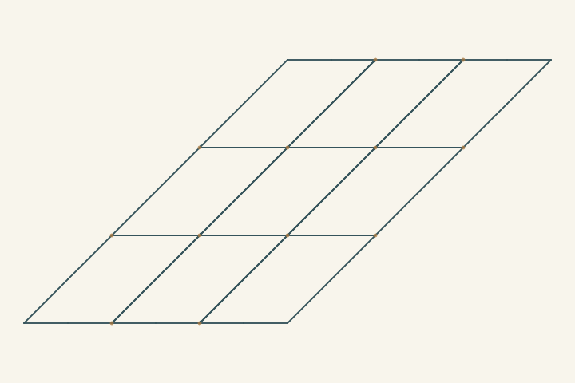
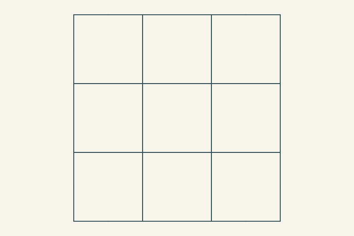

A lattice can remember
what it was built from.
A shared starting grid branches through native substitutions, chord refinements and explicit edits. Every earlier rung stays an actual structure that can answer a construction-history question. Current shape is a separate question, read from the executed graph with the recipe and history hidden.
An earlier rung, literally.
This answer follows retained native references. It does not analyze pixels or prove that every property of the earlier graph remains true of the current graph. A brick-joint edit changes connectivity; a shear can preserve it.
Native ladder + field packet · Native questions and witnesses
What can this graph support now?
Drawing histories, support and limits
Every acknowledged stroke remains in the fine view. The incidence-support question coalesces only already-shared endpoint pairs with compatible headings and retains a many-to-one correspondence. The strand-support question may additionally contract justified straight degree-two landmarks, keeping their paths and sites as carried evidence. Corners, branches, unjoined crossings and coordinate coincidences cannot supply those contractions. Counts are calculated reads, not confidence scores.
Commutations are witnessed two-step routes to the same actual site. Triangles are witnessed closed routes. Residue, competing continuations, unsearched proposals and finite boundary obligations stay visible. A channel count alone is not a grid diagnosis.
Small operations, different constructions.
Square starting grid

Shared starting construction
Stretch into rectangles

Rectangular grid; precursor to B01 and B02
Insert a middle course

B01-family construction
Shift alternate brick joints

B01-like running bond
Shear the running bond

B19-like oblique running bond
Shear the square grid

B15-like oblique quadrilateral grid
Add a third tie family

B16-like triangular network
Add crossing diagonal ties

B18-like square grid with diagonals
Stretch the diagonal network

B17-like stretched diagonal network
Pair narrow orthogonal strips

B07-like paired orthogonal bands
Turn paired strips into oblique ribbons

B08-like intersecting ribbons
Expose corner inset sites

B06-family preparation
Chamfer the square corners

B06-like octagon and interstitial diamond field
Expose basket contact intervals

B02-family assembly preparation
Assemble alternating basket rectangles

B02-like basket rectangles and square gaps
Shear the basket assembly

Exploratory oblique basket branch
Try a wider shear

New sibling of the oblique-grid family
Try an opposed brick shear

New sibling of the oblique-brick family
Try a tighter ribbon disposition

New sibling of the ribbon family
Keep the lattice. Forget its route here.
L05 · retained shear history
The actual square-grid basis remains available through the ladder.
The same current incidence, standalone

The current frame, paths, ports, periods and seams are independently rebuilt. The saved standalone world contains no participant from the original history. Exact ancestry lookup is open; a fresh history-blind support read can still recover a grid organization.
Standalone native world · External loss receipt · New observation and queries
The external loss receipt explains the deliberate forgetting and is stored separately. Retaining that receipt is different from supplying history to the standalone lattice. Recovering a coarse grid does not reconstruct the exact forgotten sequence of edits.
A false seam cannot become a join.

One offered neighbouring role has the wrong displacement. The actual equality read fails and the offered connection stays blocked. A plausible drawing cannot override that obligation.
Accepted seams authenticate exposed endpoint agreements. They do not prove infinite tiling, occupied-area coverage, no retracing or aesthetic merit.
Construction families, with a clear frontier.
This first round explores grid, brick, oblique mesh, triangular ties, ribbons, corner cuts and basket assemblies. The last three siblings deliberately vary existing substitutions to produce new nearby arrangements. We do not claim to have reconstructed all 36 atlas patterns through ladders.
| Atlas | Skeleton | Current ladder relation |
|---|---|---|
| B01 | Running brick bond | L01, L02, L03 · related construction; exact atlas equivalence unproved |
| B02 | Basket rectangles and square gaps | L01, L13, L14 · related construction; exact atlas equivalence unproved |
| B03 | Squares meet diamonds | Not constructed in this round |
| B04 | Honeycomb from three reused contours | Not constructed in this round |
| B05 | Hexagons with triangular interstices | Not constructed in this round |
| B06 | Octagons with diamond gaps · first interpretation | L11, L12 · related construction; exact atlas equivalence unproved |
| B06.B | Octagons with upright square gaps | Not constructed in this round |
| B07 | Alternating-width orthogonal bands | L09 · related construction; exact atlas equivalence unproved |
| B08 | Intersecting diagonal ribbons | L10 · related construction; exact atlas equivalence unproved |
| B08.B | Ribbons with narrow angled junctions | Not constructed in this round |
| B09 | Detached S-shaped fret units | Not constructed in this round |
| B10 | Direct bent-cross compartments | Not constructed in this round |
| B11 | Returned rows of bent crosses | Not constructed in this round |
| B12 | Closed stepped-arm compartments | Not constructed in this round |
| B13 | Interlocking serif-I compartments | Not constructed in this round |
| B14 | Dense interlocking serif-I field | Not constructed in this round |
| B15 | Two-family oblique mesh | L05 · related construction; exact atlas equivalence unproved |
| B16 | Three-family triangular mesh | L06 · related construction; exact atlas equivalence unproved |
| B17 | Rectangle mesh with diagonal ties | L08 · related construction; exact atlas equivalence unproved |
| B18 | Square mesh with diagonal ties | L07 · related construction; exact atlas equivalence unproved |
| B19 | Oblique running bond | L04 · related construction; exact atlas equivalence unproved |
| B20 | Three-lozenge centred network | Not constructed in this round |
| B21 | Opposed chevron lozenges | Not constructed in this round |
| B22 | Alternating pointed lozenges | Not constructed in this round |
| B23 | Offset squares and small square gaps | Not constructed in this round |
| B24 | Sliding triangles around shorter hexagon gaps | Not constructed in this round |
| B25 | Six-point star junctions | Not constructed in this round |
| B26 | Flat-tipped stars and twelve-ray florets | Not constructed in this round |
| B27 | Angled paired-band courses | Not constructed in this round |
| B28 | Faceted shell-fan courses | Not constructed in this round |
| B29 | Sliding hexagons and triangular gaps | Not constructed in this round |
| B30 | Faceted cloud-scale arches | Not constructed in this round |
| B31 | Slender outward arms and round markers | Not constructed in this round |
| B32 | Interrupted diagonal returns and valley joins | Not constructed in this round |
| B33 | Continuous angled courses and diamond loops | Not constructed in this round |
| B34 | Crossed faceted loop lattice | Not constructed in this round |
Three different questions stay separate: “what was this built from?”, “what organization does this current graph support?”, and “which other construction might explain it?”. Native ancestry answers the first directly. The bounded structural readers supply evidence for the second. General inverse reconstruction remains an experiment.
Host integers author repetitions of an unmeasured reach. Optional screen coordinates, line widths and aspect ratios belong to presentation. Native ladders, field programs and observations use relations and placeholders, with no numeric carriers. Selected square and triangular appearances do not establish a native Euclidean angle or length theorem.